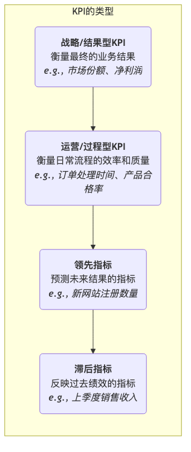

KPI (关键绩效指标)¶
在复杂的组织运营中，管理者如何才能快速、准确地判断业务的健康状况、流程的效率以及战略的执行效果？KPI（Key Performance Indicator，关键绩效指标） 正是为此而生的核心管理工具。它并非一个抽象的概念，而是一个具体的、可量化的衡量标准，用于持续监控和评估一个组织、一个团队或一名员工在达成其关键业务目标方面的表现。KPI就如同飞机的驾驶舱仪表盘，它将复杂的操作转化为几个关键的、一目了然的读数，让驾驶员能够实时了解飞行状态，并及时做出调整。
KPI的精髓在于“关键（Key）”。一个组织中可以衡量的数据成千上万，但只有那些与战略目标紧密相连、能够真正反映绩效核心的指标，才能被称为KPI。它旨在将组织的注意力引导到最重要的事情上，并为绩效管理、目标设定和持续改进提供一个客观、统一的数据基础。从衡量网站的访客转化率，到评估生产线的良品率，再到跟踪客户服务的响应时间，KPI无处不在，是现代数据驱动管理不可或缺的基石。
KPI的特征与类型¶
一个有效的KPI通常具备以下几个特征： * 可量化（Quantifiable）：必须是可以用数字来衡量的。 * 与战略相关（Strategic）：必须与组织的战略目标直接挂钩。 * 可操作（Actionable）：指标的变化应该能够清晰地指向具体需要改进的行动。 * 有时效性（Timely）：能够被定期地、及时地进行追踪和报告。
根据其衡量内容的不同，KPI可以被分为多种类型：

如何设定和使用KPI¶
-
第一步：明确你的战略目标
KPI的设定必须始于对战略的深刻理解。你必须清晰地知道，“对我们这个组织/团队来说，成功意味着什么？”例如，一个电商公司的战略目标可能是“提高客户忠诚度”。
-
第二步：提出关键业务问题
将战略目标转化为一系列具体的业务问题。对于“提高客户忠诚度”这个目标，关键问题可能是：“我们的客户重复购买的频率如何？”“我们的客户是否愿意向他人推荐我们？”
-
第三步：选择并定义关键绩效指标
为每个关键问题，找到一个或多个最能回答它的、可量化的指标。在这一步，要力求精简，避免“指标轰炸”。 * 回答“客户重复购买频率”，可以选择 “客户年均购买次数” 或 “客户复购率” 作为KPI。 * 回答“客户是否愿意推荐”，可以选择 “净推荐值（NPS）” 作为KPI。
-
第四步：设定目标值与阈值
为每个KPI设定一个具体的目标值（Target），并可以设定不同的表现阈值（例如，红色警报区、黄色警戒区、绿色健康区），以便进行快速的视觉化管理。
-
第五步：确定数据来源与报告频率
明确每个KPI的数据从哪里来，由谁负责收集，以及报告的频率是怎样的（日报、周报还是月报）。
-
第六步：定期审阅与采取行动
定期（如在周会或月度经营分析会上）审阅KPI的表现。审阅的重点不是为了评判，而是为了分析和行动。当一个KPI表现不佳时，需要深入分析其背后的原因，并制定具体的改进措施。
应用案例¶
案例一：电商网站运营
- 战略目标：提升网站的盈利能力。
- 关键KPIs：
- 访客转化率（Conversion Rate）：衡量网站流量转化为实际购买的效率。
- 平均客单价（Average Order Value, AOV）：衡量每个订单的平均金额。
- 客户生命周期价值（Customer Lifetime Value, CLV）：预测每个客户在未来能带来的总利润。
案例二：呼叫中心客户服务
- 战略目标：提供高效、优质的客户支持。
- 关键KPIs：
- 首次呼叫解决率（First Call Resolution, FCR）：衡量一次性解决客户问题的能力。
- 平均处理时长（Average Handle Time, AHT）：衡量处理一次客户请求的平均效率。
- 客户满意度（Customer Satisfaction, CSAT）：通过事后问卷，直接测量客户对服务的满意程度。
案例三：人力资源管理
- 战略目标：吸引并保留优秀人才。
- 关键KPIs：
- 员工流失率（Employee Turnover Rate）：衡量人才保留的情况，特别是“关键岗位员工流失率”。
- 员工敬业度指数（Employee Engagement Index）：通过年度敬业度调查，衡量员工的投入和满意程度。
- 平均招聘成本（Cost Per Hire）：衡量招聘活动的效率。
KPI的优势与挑战¶
核心优势
- 提供客观依据：将模糊的“表现好坏”转化为客观、统一的数据，为绩效评估和决策提供依据。
- 聚焦关键：引导组织将注意力集中在对战略成功最重要的活动上。
- 促进沟通与透明：清晰的KPI使得每个员工都能理解自己的工作表现是如何被衡量的，以及如何为团队目标做贡献。
潜在挑战
- 指标的片面性：如果KPI设定不当，可能会导致“指标主义”或短视行为。例如，如果只考核“呼叫中心接听电话的数量”，客服人员可能会为了追求数量而牺牲通话质量。
- “能量化的不一定重要，重要的不一定能量化”：过度依赖KPI，可能会忽略掉那些难以量化但同样重要的因素，如组织文化、创新精神等。
- 需要动态调整：随着战略和市场环境的变化，KPI也必须被定期审视和调整，否则就可能变得僵化和过时。
延伸与关联¶
-
OKR（目标与关键结果）：KPI和OKR是现代目标管理中相辅相成的两个工具。
- KPI 更像是汽车的“仪表盘”，用于监控那些需要长期保持在健康状态的、常规性的指标（如利润率、客户满意度）。它的目标通常是“维持”或“小幅优化”。
- OKR 更像是汽车的“导航仪”，用于指引那些需要突破和创新的、具有挑战性的方向性目标（如“成功进入一个新市场”）。它的目标是“达成”一个全新的状态。
- 在实践中，一个团队的仪表盘KPI（如“网站崩溃率必须低于0.1%”）是其正常运作的基础，而他们的OKR则是本季度需要集中精力去攻克的山头。
-
平衡计分卡（Balanced Scorecard）：KPI是构建平衡计分卡的基本元素。平衡计分卡提供了一个全面的框架，来确保你所选择的KPI能够在财务、客户、内部流程、学习与成长这四个维度上取得平衡。
来源参考：KPI的概念根植于现代管理会计和绩效管理理论。罗伯特·卡普兰（Robert S. Kaplan）和戴维·诺顿（David P. Norton）在发展平衡计分卡的过程中，极大地推动了KPI在战略管理中的应用。在数字化时代，KPI已成为数据驱动决策文化的核心组成部分。